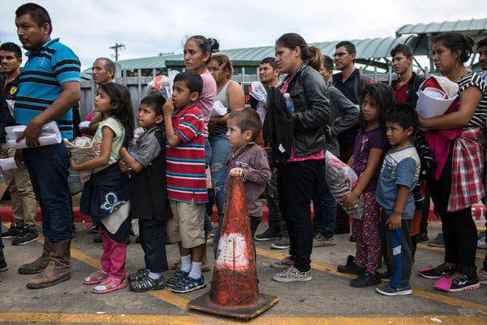

Mobile uploads
According to a new Reuters poll, 56% of American registered voters said most or all immigrants in the U.S. illegally should be deported.
I try to stay focused on the cause of homelessness in America. I think MLK made a tactical error getting involved in the Vietnam debate. Crossing over into other topics slices your supporters up.
I have a rather large group of conservative supporters who I love and am deeply thankful for. We see eye to eye on many things.
This post isn’t so much about immigration as it is about large swaths of society just flippantly disregarding other large swaths of people. “Those people are wrong. Screw them.”
Many times, that’s the entirety of understanding someone else’s perspective. Let me give you some other examples where this happens:
Conservatives are often deeply influenced by their religion. Liberals generally don’t have much use for religion anymore. So religious values look backwards and hurtful. Meanwhile, humans have always been spiritual beings. If anything, the liberals have, for the time being, lost their spiritual way. And they are suffering for it, in my opinion.
Liberals value education and intellectual pursuits like art, science, and philosophy. Conservatives generally look down on those values. They are seen as uppity and elitist. And that too, is an unfortunate loss for the conservative community.
Of course I’m generalizing. I have many friends who cross over those social boundaries in very interesting ways. (Most people are not just a black and white statistic.)
Statistically, these generalizations bare out in the social makeup of America.
That’s not inherently bad. But here come the politicians to fan the flames of division and hate. They use those general divisions against us for their own selfishness.
They are master marketers and public relations experts with SO much money to find these wedge issues that start quite small and then they just hammer and hammer on them until they are massive chasms of divide.
MOST Republicans don’t hate Black people and Brown people. They just are worried about the longevity, safety and wellbeing of the country.
MOST Democrats don’t hate rural White people. They are just worried that we might slip into a country that devalues education and rights for women and other marginalized people.
These issues are legitimate. These things could happen. But with the help of money-grubbing, power-obsessed politicians, they take these fears and terrify us and cause another much more likely fear that no one talks about because it doesn’t serve the powerful: we are currently eating each other alive and that is most likely how the fall of America will actually happen.